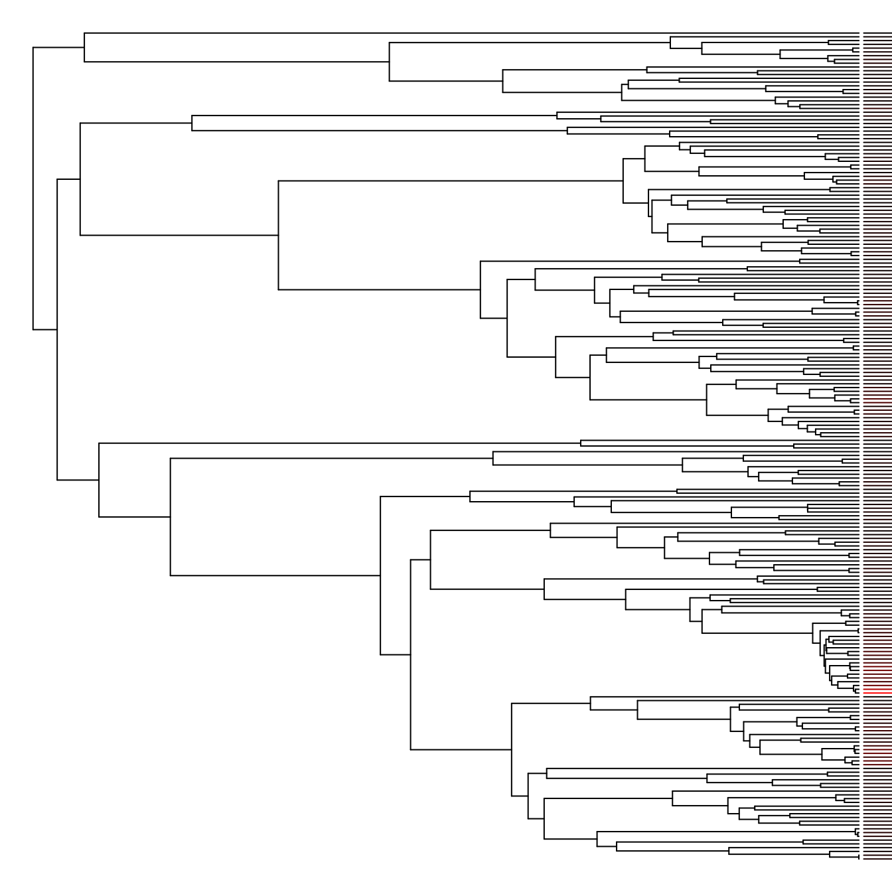

A simple comparative analysis with the Fish Tree of Life
Jonathan Chang
Source:vignettes/comparative-analysis.Rmd
comparative-analysis.RmdTo demonstrate the functionality of the fishtree package and how it integrates well with the rest of the R phylogenetics ecosystem, this vignette will walk you through a simple comparative analysis.
Getting and cleaning data
A common hypothesis tested in comparative methods is whether habitat shifts drive rates of diversification in various groups. For example, Santini et al. (2013) tested, among other things, whether reef-associated pufferfishes enjoyed faster rates of speciation compared to their non-reef relatives.
First, load the fishtree package and download the subset of the Fish Tree of Life corresponding to the taxon of interest. To make things more interesting we’ll work on the entire order (Tetraodontiformes) rather than the family in the 2013 study.
library(fishtree)
tree <- fishtree_phylogeny(rank = "Tetraodontiformes")
plot(tree, show.tip.label = FALSE, no.margin = TRUE)
Next, we need to get habitat data and associate it with our phylogeny. The rfishbase package (Boettiger et al. 2012) has a variety of convenient functions to access data recorded by the Fishbase editors. Load the rfishbase package and retrieve the relevant data in the DemersPelag field, which identifies whether a species is reef-associated or not, among other things.
library(rfishbase)
tips <- gsub("_", " ", tree$tip.label, fixed = TRUE)
fb_results <- species(species_list = tips, fields = c("Species", "DemersPelag"))
#> Joining, by = c("Subfamily", "GenCode", "FamCode")
#> Joining, by = "FamCode"
#> Joining, by = c("Order", "Ordnum", "Class", "ClassNum")
#> Joining, by = c("Class", "ClassNum")
fb_results <- fb_results[!is.na(fb_results$DemersPelag), ]
head(fb_results)
#> # A tibble: 6 × 2
#> Species DemersPelag
#> <chr> <chr>
#> 1 Carinotetraodon lorteti benthopelagic
#> 2 Carinotetraodon borneensis benthopelagic
#> 3 Carinotetraodon irrubesco benthopelagic
#> 4 Carinotetraodon salivator benthopelagic
#> 5 Carinotetraodon travancoricus demersal
#> 6 Carinotetraodon imitator benthopelagicNote that we had to replace the underscores in the tip labels with spaces. This is a common source of errors, so if your analyses don’t seem to work correctly always check whether the functions you’re using expect underscores or spaces.
There’s a lot of data in the DemersPelag field, but we only want to know if the species is reef-associated or not.
reef <- data.frame(tip = gsub(" ", "_", fb_results$Species),
is_reef = as.numeric(fb_results$DemersPelag == "reef-associated"))
head(reef)
#> tip is_reef
#> 1 Carinotetraodon_lorteti 0
#> 2 Carinotetraodon_borneensis 0
#> 3 Carinotetraodon_irrubesco 0
#> 4 Carinotetraodon_salivator 0
#> 5 Carinotetraodon_travancoricus 0
#> 6 Carinotetraodon_imitator 0We’ve also converted the tip labels back to underscores, since we need to ensure that the tip labels on our phylogeny match the labels on our trait data. The geiger package (Pennell et al. 2014) provides a convenient function that will perform this check. The name.check function expects row names on our data object, so we will do that as well.
library(geiger)
#> Loading required package: ape
rownames(reef) <- reef$tip
nc <- geiger::name.check(tree, reef)
nc
#> $tree_not_data
#> [1] "Chilomycterus_spinosus_spinosus"
#> [2] "Lagocephalus_lagocephalus_lagocephalus"
#> [3] "Monotrete_cochinchinensis"
#> [4] "Monotrete_leiurus"
#> [5] "Ostracion_cubicus"
#> [6] "Ostracion_immaculatus"
#> [7] "Ostracion_solorensis"
#> [8] "Paramonacanthus_filicauda"
#> [9] "Rhinesomus_triqueter"
#> [10] "Sphoeroides_cheesemanii"
#> [11] "Stephanolepis_auratus"
#> [12] "Stephanolepis_hispidus"
#> [13] "Takifugu_fasciatus"
#> [14] "Tetraodon_abei"
#> [15] "Tetraodon_baileyi"
#> [16] "Tetraodon_biocellatus"
#> [17] "Tetraodon_cambodgiensis"
#> [18] "Tetraodon_cutcutia"
#> [19] "Tetraodon_erythrotaenia"
#> [20] "Tetraodon_fluviatilis"
#> [21] "Tetraodon_nigroviridis"
#> [22] "Tetraodon_palembangensis"
#> [23] "Tetraodon_suvattii"
#> [24] "Tetraodon_turgidus"
#> [25] "Tetrosomus_fornasini"
#>
#> $data_not_tree
#> character(0)We’ve identified a mismatch between the tree and the data. We’ll exclude the tips lacking trait data using drop.tip:
If we also had data that was not in the tree, we could exclude that using the following command, but it isn’t necessary in this case:
Confirm that we have the same number of observations in the tree and the data:
Plotting diversification rates
There are several other data sources available in the fishtree package, including speciation rates computed via the DR method (Jetz et al. 2012). Retrieve speciation rate data:
rates <- fishtree_tip_rates(rank = "Tetraodontiformes")
head(rates)
#> species lambda.tv mu.tv lambda.tc mu.tc
#> 2 Abalistes stellaris 0.08859469 0.01282721 0.09181900 0.02239813
#> 3 Abalistes stellatus 0.08859469 0.01282721 0.09181900 0.02239813
#> 34 Acanthaluteres spilomelanurus 0.10180976 0.01614045 0.16054060 0.06301037
#> 35 Acanthaluteres vittiger 0.10180976 0.01614045 0.16054060 0.06301037
#> 131 Acanthostracion polygonius 0.08549937 0.01178475 0.07697343 0.01359198
#> 132 Acanthostracion quadricornis 0.08549937 0.01178475 0.07697343 0.01359198
#> dr
#> 2 0.11678851
#> 3 0.11909205
#> 34 0.28175984
#> 35 0.28406568
#> 131 0.07606301
#> 132 0.07213440We’re interested in just the dr column, so extract that and convert spaces to underscores again. Then merge the habitat data with the speciation rate data.
rates <- data.frame(tip = gsub(" ", "_", rates$species), dr = rates$dr)
rownames(rates) <- rates$tip
merged <- merge(reef, rates)As a quick check our data, let’s plot histograms of the DR rate of reef and non-reef species:
breaks <- seq(min(merged$dr), max(merged$dr), length.out = 30)
hist(subset(merged, is_reef == 1)$dr, col = "orange", density = 20, angle = 135,
breaks = breaks)
hist(subset(merged, is_reef == 0)$dr, col = "purple", density = 20, angle = 45,
breaks = breaks, add = TRUE)
It seems like for the most part, the Tetraodontiformes have a low speciation rate, except for a subset of non-reef species that have a faster rate.
Of course, with any comparative method, it’s critical to consider the historical relationships between the species you’re examining. The following snippet of code is quite complex, but demonstrates how to draw rates onto a phylogeny using colored bars next to each tip in question.
# Plot tree and extract plotting data
plot(tree, show.tip.label = FALSE, no.margin = TRUE)
obj <- get("last_plot.phylo", .PlotPhyloEnv)
# Generate a color ramp
ramp <- grDevices::colorRamp(c("black", "red"), bias = 10)
tiporder <- match(rates$tip, tree$tip.label)
scaled_rates <- rates$dr / max(rates$dr, na.rm = TRUE)
tipcols <- apply(ramp(scaled_rates), 1, function(x) do.call(rgb, as.list(x / 255)))
# Place colored bars
for (ii in 1:length(tiporder)) {
tip <- tiporder[ii]
lines(x = c(obj$xx[tip] + 0.5, obj$xx[tip] * 1.5 + 0.5 + scaled_rates[ii]),
y = rep(obj$yy[tip], 2),
col = tipcols[ii])
}
Running an analysis
Let’s perform a more quantitative analysis using using hisse. We’ll test 4 models: a BiSSE-like model, a BiSSE-like null model, a hisse model, and the hisse 2 state null model.
library(hisse)
#> Loading required package: deSolve
#> Loading required package: GenSA
#> Loading required package: subplex
#> Loading required package: nloptrThe hisse package parameterizes things differently from diversitree (where BiSSE lives), so we aren’t able to exactly replicate the analyses in the Santini paper. Instead we’ll settle by ensuring that the epsilon parameter, \(\epsilon = \frac{\mu}{\lambda}\) is constrained to be equal for both reef and non-reef taxa. We’ll also constrain transition rates to be equal, since it can be difficult to estimate those.
Note that to ensure this vignette can be run in a reasonable amount of time, we set sann = FALSE to disable the simulated annealing procedure in hisse. However, for any actual analysis this option should be turned on for maximum accuracy and confidence in your final results.
First, we’ll construct and run the BiSSE model and the BiSSE null model:
trans.rates.bisse <- TransMatMakerHiSSE()
pp.bisse.full <- hisse(tree, reef,
hidden.states = FALSE, sann = FALSE,
turnover = c(1, 2), eps = c(1, 1),
trans.rate = trans.rates.bisse)
#> Warning in hisse(tree, reef, hidden.states = FALSE, sann = FALSE, turnover =
#> c(1, : You have chosen to rely on the internal starting points that generally
#> work but does not guarantee finding the MLE.
#> Initializing...
#> Finished. Beginning bounded subplex routine...
#> Finished. Summarizing results...
pp.bisse.null <- hisse(tree, reef,
hidden.states = FALSE, sann = FALSE,
turnover = c(1, 1), eps = c(1, 1),
trans.rate = trans.rates.bisse)
#> Warning in hisse(tree, reef, hidden.states = FALSE, sann = FALSE, turnover =
#> c(1, : You have chosen to rely on the internal starting points that generally
#> work but does not guarantee finding the MLE.
#> Initializing...
#> Finished. Beginning bounded subplex routine...
#> Finished. Summarizing results...Next, we’ll run the full hisse model, save for the constrained transition rates and epsilon.
trans.rates.hisse <- TransMatMakerHiSSE(hidden.traits = 1)
trans.rates.hisse <- ParEqual(trans.rates.hisse, c(1, 2, 1, 3, 1, 4, 1, 5))
pp.hisse.full <- hisse(tree, reef,
hidden.states = TRUE, sann = FALSE,
turnover = c(1, 2, 3, 4), eps = c(1, 1, 1, 1),
trans.rate = trans.rates.hisse)
#> Warning in hisse(tree, reef, hidden.states = TRUE, sann = FALSE, turnover =
#> c(1, : You have chosen to rely on the internal starting points that generally
#> work but does not guarantee finding the MLE.
#> Initializing...
#> Finished. Beginning bounded subplex routine...
#> Finished. Summarizing results...Finally, we’ll build the 2 state character independent diversification model, sometimes called CID-2. We’ll use this as our null model by forcing the visible states (reef or non-reef) to have the same net turnover rates, while permitting the hidden states to vary freely.
pp.hisse.null2 <- hisse(tree, reef,
hidden.states = TRUE, sann = FALSE,
turnover = c(1, 1, 2, 2), eps = c(1, 1, 1, 1),
trans.rate = trans.rates.hisse)
#> Warning in hisse(tree, reef, hidden.states = TRUE, sann = FALSE, turnover =
#> c(1, : You have chosen to rely on the internal starting points that generally
#> work but does not guarantee finding the MLE.
#> Initializing...
#> Finished. Beginning bounded subplex routine...
#> Finished. Summarizing results...We can combine all of our results into a single table for easy comparison.
results <- list(pp.bisse.full, pp.bisse.null, pp.hisse.null2, pp.hisse.full)
aicc <- sapply(results, `[[`, "AICc")
lnl <- sapply(results, `[[`, "loglik")
data.frame(model = c("bisse_full", "bisse_null", "hisse_cid2", "hisse_full"), aicc, lnl)
#> model aicc lnl
#> 1 bisse_full 3.188646e+32 -1.594323e+32
#> 2 bisse_null 3.188646e+32 -1.594323e+32
#> 3 hisse_cid2 3.188646e+32 -1.594323e+32
#> 4 hisse_full 3.188646e+32 -1.594323e+32Summarizing the results on the basis of AICc suggests that the best supported model is a null model, where habitat has no effect on speciation rate.